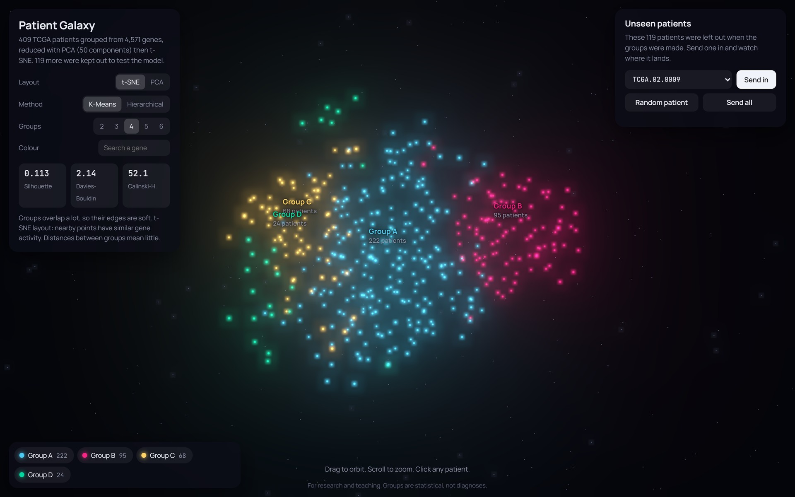
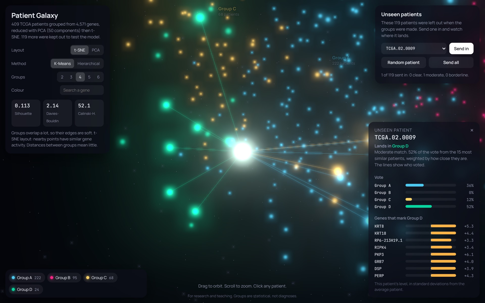
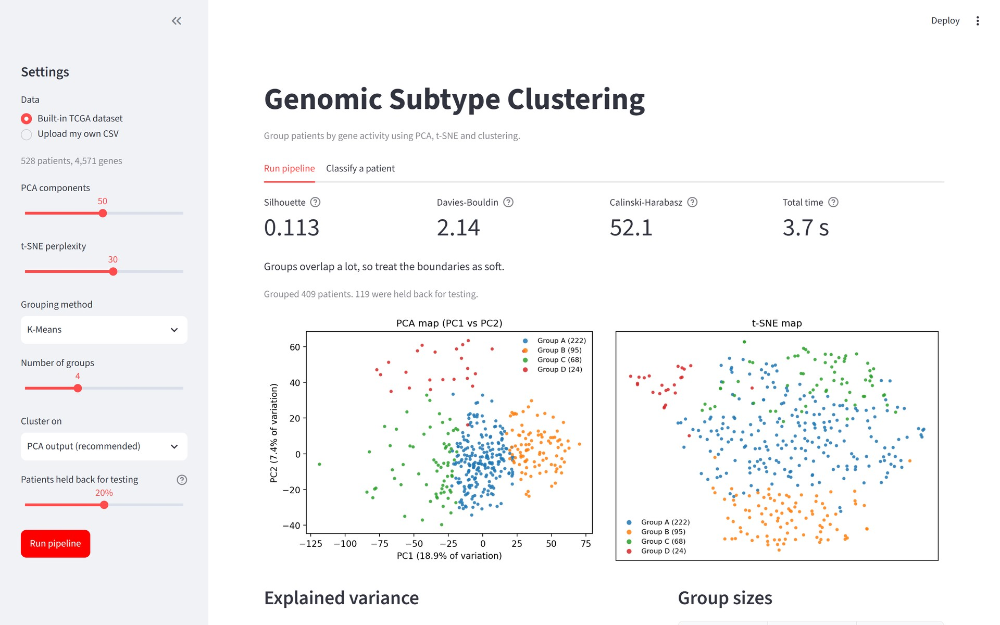
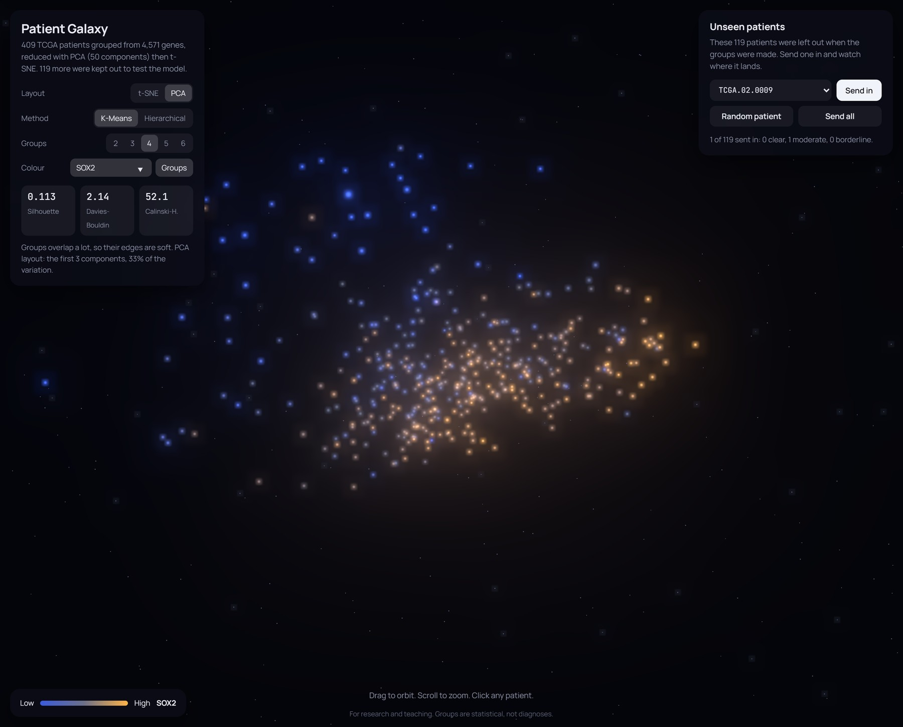
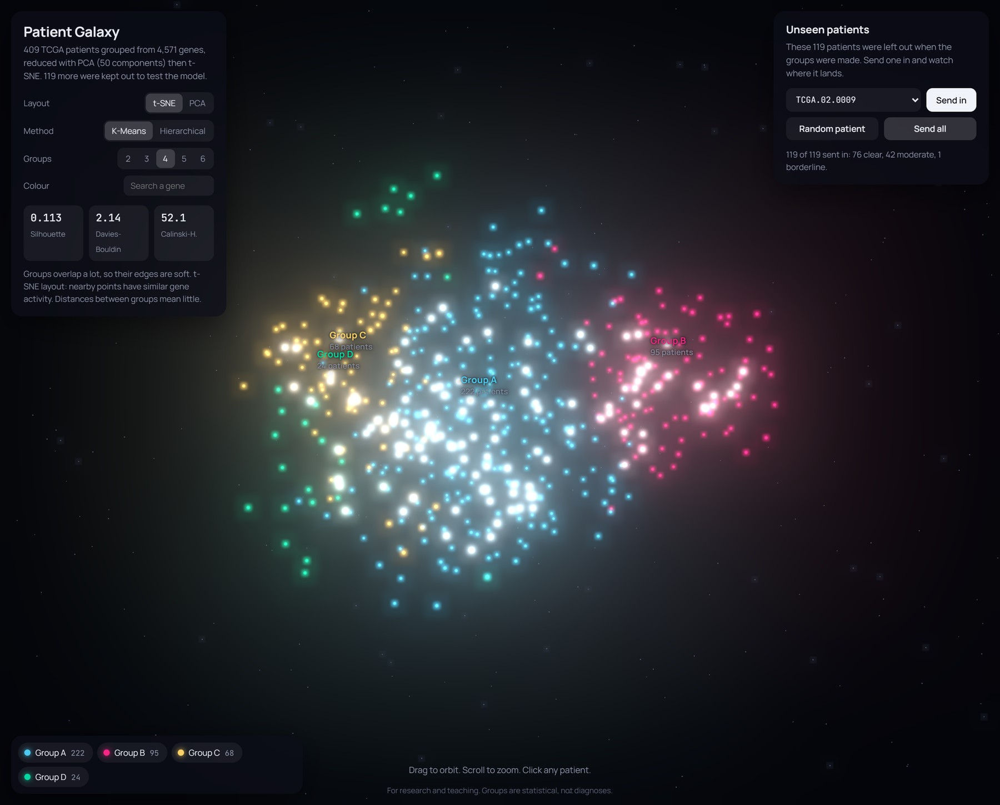
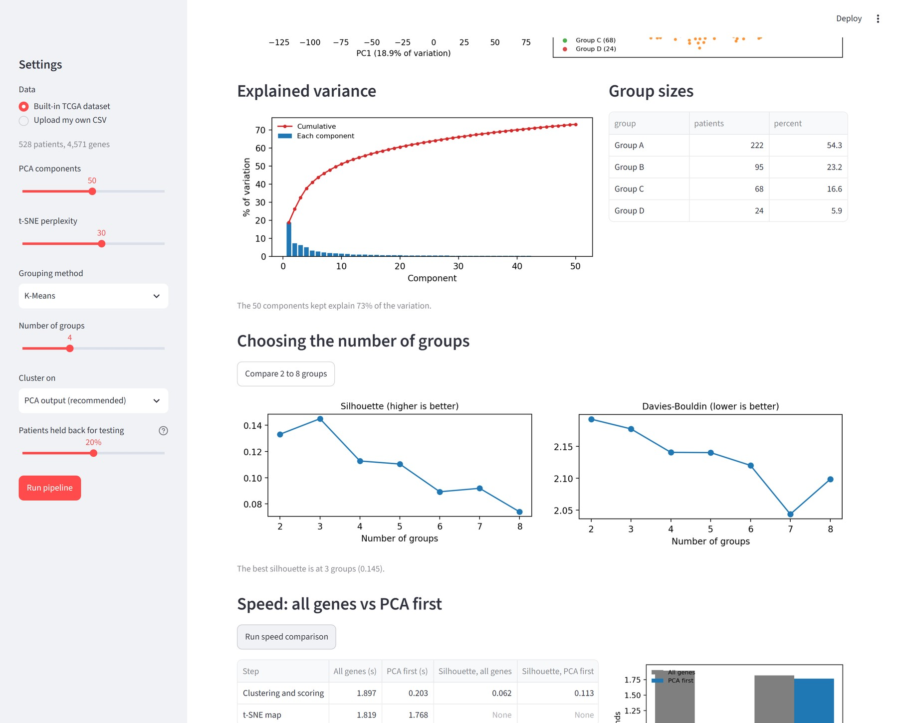
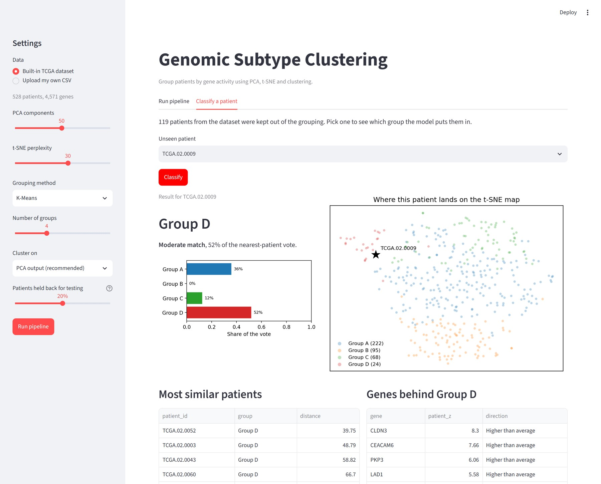

Team NumberT.N. - 10
Team Members
2520030184 Aniketh Pani
2520030187 Harshit Sajjanapu
Guide NameMr. Shaik Asif
1. Patient Galaxy (Home Page)

409 TCGA patients as glowing points in 3D, coloured by K-Means group. Drag to orbit, scroll to zoom, click any patient.
2. Unseen Patient Prediction

A held-out patient flies in and lands in Group D. Lines link the 15 most similar patients that voted.
3. Pipeline Dashboard

Set PCA, t-SNE, method and k, then read the scores and maps. A full run takes about 3 seconds.
4. Additional Screens

Colour by gene: SOX2 activity across all patients in the PCA layout.

Send all: 119 unseen patients land, 76 of them with a clear match.

Choosing k: scores for 2 to 8 groups and PCA explained variance.

Classify a patient: vote share per group and position on the t-SNE map.
Key Front End Features
- Interactive 3D patient galaxy built with three.js and WebGL
- Smooth morph between the t-SNE and PCA layouts
- Live switch of method (K-Means, Hierarchical) and k from 2 to 6
- Colour every patient by any gene's activity
- Unseen patients fly in and land by a nearest-patient vote
- Patient cards with similar patients and group marker genes
- Streamlit pipeline tool with live scores and speed tests
- CSV downloads of groups, metrics and predictions
Built with
Pythonscikit-learnpandasStreamlitthree.jsWebGLmatplotlib
Runs on real TCGA data: 528 patients, with 119 kept out to test the model.